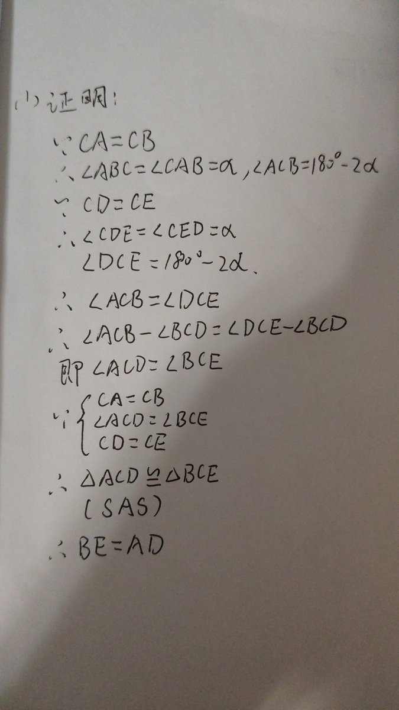
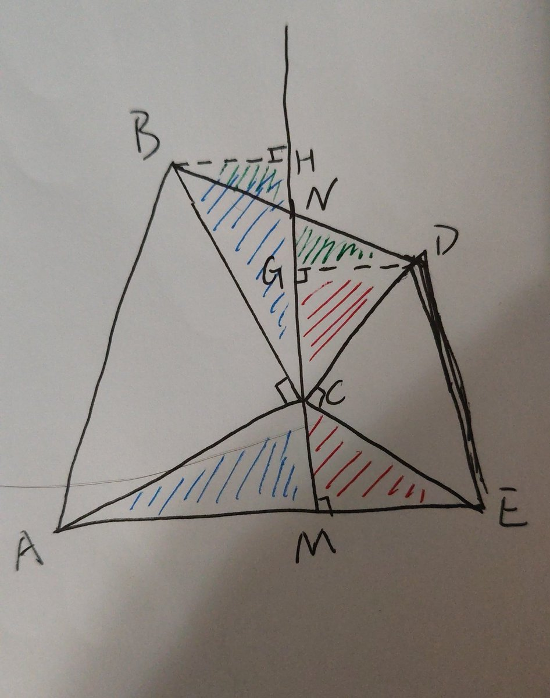
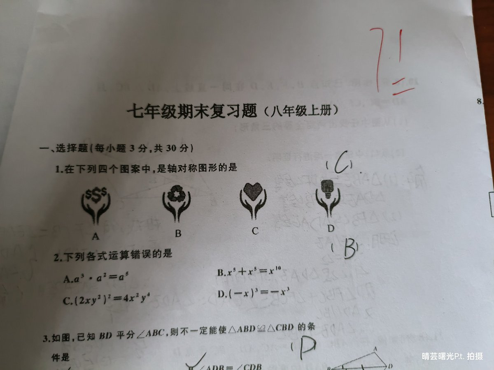
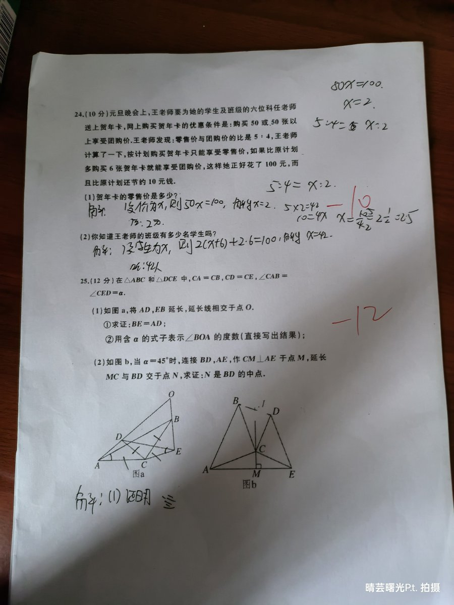

貓貓貓貓喵喵喵
@aaarjkk
@Yg_Xyn 已思考40分钟...
我已经好久没有写过压轴题了呜呜，基本上都没有时间写..o(╥﹏╥)o




芸光酱𝑷𝒓𝒊𝒔𝒆𝑻𝒘𝒊𝒏𝒌𝒍𝒆 🍥🏳️⚧️
@Yg_Xyn
数学你不能这么对我😭😭😭我之前明明还可以考90,100多的，但是这次为什么只考了71分，连及格都没有😭我期末考试怎么考高分😭后面半页我甚至1分都没得😭这简直我人生中的败笔😭真是考试的时候没有思路，发卷的时候又都会了😢😖😠 https://t.co/EApfCAwizt